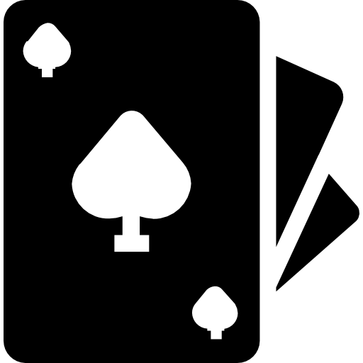

ABOUT

-
高嘉駿 / Jia Jun Kao
- Birthday : 2004/02/01
- School : Chung Yuan Christian University
- From : Taichung City
- Department : Information Management
又沒有冷漠到像個哲學家，
但我清醒到足以成為一個廢人。"


SKILLS
Python
HTML
CSS
85%
75%
70%
70%
75%
70%
70%


INTEREST
打麻將 / Mahjong
麻將是我喜歡的消遣活動之一，這遊戲需要戰略思考和計算能力，每次玩牌都像是一場智力的競賽。在與朋友一起打麻將的時候，不僅能夠鍛鍊腦力，也能培養人際關係和社交技能。
麻將是我喜歡的消遣活動之一，這遊戲需要戰略思考和計算能力，每次玩牌都像是一場智力的競賽。在與朋友一起打麻將的時候，不僅能夠鍛鍊腦力，也能培養人際關係和社交技能。

打排球 / Volleyball
排球是我喜歡的運動之一，能夠鍛鍊全身協調性和團隊合作精神。在場上每一次的傳球、攔網和扣球都需要隊友之間的默契配合，這種團隊協作的感覺非常令人滿足。
排球是我喜歡的運動之一，能夠鍛鍊全身協調性和團隊合作精神。在場上每一次的傳球、攔網和扣球都需要隊友之間的默契配合，這種團隊協作的感覺非常令人滿足。

影片剪輯 / Video Editing
使用Premiere Pro進行影片剪輯是我的興趣之一，喜歡將各種影像素材組合成一個完整作品的過程。透過影片剪輯，我可以表達自己的創意和想法，創造出獨特的視覺體驗。
使用Premiere Pro進行影片剪輯是我的興趣之一，喜歡將各種影像素材組合成一個完整作品的過程。透過影片剪輯，我可以表達自己的創意和想法，創造出獨特的視覺體驗。
德州撲克 / Texas Hold'em Poker
德州撲克是我喜歡的消遣活動之一，這款遊戲結合了心理戰與策略判斷，每一局都像是一場緊張的智慧對決。過程中需要分析牌面、觀察對手的反應，並在有限資訊下作出最有利的決策，不僅能鍛鍊思考與判斷能力，也能培養冷靜面對壓力與掌握時機的技巧。
德州撲克是我喜歡的消遣活動之一，這款遊戲結合了心理戰與策略判斷，每一局都像是一場緊張的智慧對決。過程中需要分析牌面、觀察對手的反應，並在有限資訊下作出最有利的決策，不僅能鍛鍊思考與判斷能力，也能培養冷靜面對壓力與掌握時機的技巧。

EXPERIENCE
工讀經歷
我曾在 7-11 、 飲料店 、 藏壽司 、 早餐店 、 無菜單料理 和 牛排館 工作過。這些多樣化的工作經驗不僅讓我學會了如何處理顧客需求，也培養了我的耐心和應變能力。
我曾在 7-11 、 飲料店 、 藏壽司 、 早餐店 、 無菜單料理 和 牛排館 工作過。這些多樣化的工作經驗不僅讓我學會了如何處理顧客需求，也培養了我的耐心和應變能力。
大學經歷
我在大學期間參與了多項活動，包括 木匠之家二手義賣 、 全大運志工服務 、 籌辦耶誕舞會 、 擔任大運場器組長 ，以及 參與前後端專題開發 。這些經驗豐富了我的大學生活，也讓我在專業和個人成長方面有所收穫。
我在大學期間參與了多項活動，包括 木匠之家二手義賣 、 全大運志工服務 、 籌辦耶誕舞會 、 擔任大運場器組長 ，以及 參與前後端專題開發 。這些經驗豐富了我的大學生活，也讓我在專業和個人成長方面有所收穫。
PHOTO